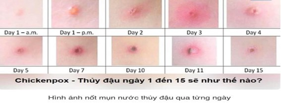

Tin tức
BÀI TUYÊN TRUYỀN VỀ PHÒNG CHỐNG BỆNH THUỶ ĐẬU
Thủy đậu là gi ?
Bệnh Thủy đậu là một bệnh cấp tính do nhiễm vi rút gây ra. Vi rút có khả năng sống được vài ngày trong vẩy thủy đậu khi bong ra tồn tại trong không khí... Bệnh lây truyền từ người sang người qua đường hô hấp thông qua tiếp xúc trực tiếp, qua dịch tiết mũi họng, dịch từ nốt phỏng thủy đậu. Khi bị bệnh thường có biểu hiện mệt mỏi, nhức đầu, sốt nhẹ, chảy nước mũi, đau họng và trên da xuất hiện các nốt ban đỏ bắt đầu ở vùng đầu, mắt rồi lan ra toàn thân. Thời kỳ lây truyền của bệnh là 1-2 ngày trước khi phát ban và trong vòng 5 ngày sau khi xuất hiện nốt bọng nước đầu tiên. Bệnh kéo dài từ 7 – 10 ngày.
Để chủ động phòng tránh bệnh thủy đậu, Bộ Y tế khuyến cáo người dân thực hiện một số biện pháp sau:
1. Tiêm vắc xin phòng bệnh thủy đậu cho trẻ em từ 12 tháng tuổi.
2. Hạn chế tiếp xúc với người bị bệnh để phòng tránh lây lan.
3. Những trường hợp mắc bệnh thuỷ đậu cần được nghỉ học hoặc nghỉ làm việc từ 7 đến 10 ngày từ lúc khi bắt đầu phát hiện bệnh để tránh lây lan cho những người xung quanh.
4. Thường xuyên rửa tay bằng xà phòng, sử dụng các đồ dùng sinh hoạt riêng, vệ sinh mũi họng hàng ngày bằng dung dịch nước muối sinh lý.
5. Thực hiện vệ sinh nhà cửa, trường học và vật dụng sinh hoạt bằng dung dịch sát khuẩn thông thường.
BÀI TUYÊN TRUYỀN VỀ PHÒNG CHỐNG BỆNH TAY CHÂN MIỆNG
Bệnh tay chân miệng đang chiều hướng gia tăng tại một số vùng của nước ta, đặc biệt là trong các trường mầm non, tiểu học.
Căn bệnh này không chỉ ảnh hưởng đến trẻ sơ sinh và trẻ nhỏ mà còn có thể ảnh hưởng đến cả người lớn.
Tay chân miệng là bệnh không có thuốc đặc trị, phần lớn bệnh nhân sẽ tự khỏi sau 10-14 ngày. Tuy nhiên, bệnh cũng có thể chuyển biến nghiêm trọng, thậm chí dẫn đến tử vong.
Nhà trường và phụ huynh hoàn toàn có thể bảo vệ con mình khỏi bị lây nhiễm. Nếu có dịch tay chân miệng bùng phát tại trường, hãy:
- Hạn chế tiếp xúc gần
- Tăng cường vệ sinh khử khuẩn
- Nhắc nhở phụ huynh cho con em ở nhà khi trẻ có triệu chứng bệnh
- Chăm sóc và điều trị phù hợp cho trẻ mắc bệnh
- Lưu ý các dấu hiệu trở nặng của bệnh
- Thông báo ngay cho cơ quan y tế và chính quyền địa phương khi có ca bệnh
BÀI TUYÊN TRUYỀN VỀ PHÒNG CHỐNG CÚM A
Cúm A là gì?
Trong Quyết định số 2762/QĐ-BYT về việc ban hành Hướng dẫn chẩn đoán,
điều trị và phòng lây nhiễm cúm A số 2762/QĐ-BYT nêu rằng...
Cúm A là một
loại bệnh nhiễm trùng đường hô hấp cấp tính do các virus cúm mùa gây nên
các chủng cúm A phổ biến là A/H1N1, A/H3N2...
Cúm A lây từ người sang người qua các giọt bắn khi bệnh nhân hắt hơi, ho
hoặc giao tiếp hàng ngày. Căn bệnh này còn có thể lây từ động vật, cụ
thể là gia cầm như gà, vịt ...
Việc nhận biết sớm các triệu chứng của cúm A rất khó phân biệt với các
đường hô hấp khác việc chẩn đoán điều trị phải tuân thủ theo hướng dẫn
của cơ sở y tế gần nhất để thăm khám kịp thời, tránh các biến chứng nguy
hiểm.
Cách phòng bệnh cúm, hãy tiêm vaccine phòng tránh cúm A, ăn uống đủ chất tăng sức đề kháng, luôn giữ ấm cơ thể, thường xuyên rửa tay xà phòng và nước sạch, vệ sinh mũi họng hằng ngày bằng nước muối, hạn chế tiếp xúc với người bệnh cúm...nhất là trong thời điểm giao mùa, thời tiết thay đổi thất thường này.
Dưới đây là hướng dẫn của các bác sĩ Bệnh viện Nhi Trung ương.